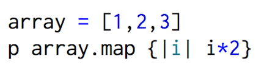
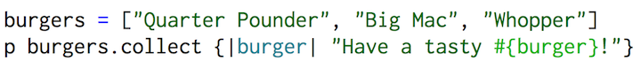
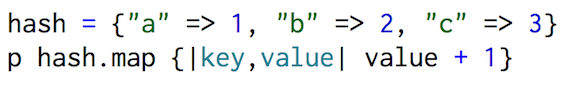

What exactly is Enumerable?
In Ruby, Enumerable is how we get elements out of an object, such as an array or a hash, one at a time. There are tons of enumerable methods such as each, find_all, and drop. A full list of enumerable methods can be found here. Enumerable methods are extremely useful to search, sort, or transform collections.
What is Enumerable #map and #collect?
Map and collect are two enumerable methods that basically implement the same thing. They take each item in the collection and perform a block of code on them.Here is an example of how #map works:

which will return
[2,4,6] As you can see, it returns a new array with the results of the running block once for each element. This does not alter the original array, however. If you wanted to permanently change the array, you would add a bang(!) operator after map to make the method destructive.
Here is another example, this time using #collect:

which will return
["Have a tasty Quarter Pounder!", "Have a tasty Big Mac!", "Have a tasty Whopper!] What are placeholders?
In the code array.map {|i| i*2}, i is simply a placeholder- anything can be used there. It can be helpful to be descriptive when picking placeholder names. This is why I used burger as the placeholder in burgers.collect {|burger| "Have a tasty #{burger}!"}. It's also important to mention how #map and #collect are called against hashes. In this case, two placeholders are used: one for the key and one for the value. Here is an example of the use of #map on a hash:

which will return
[2, 3, 4]